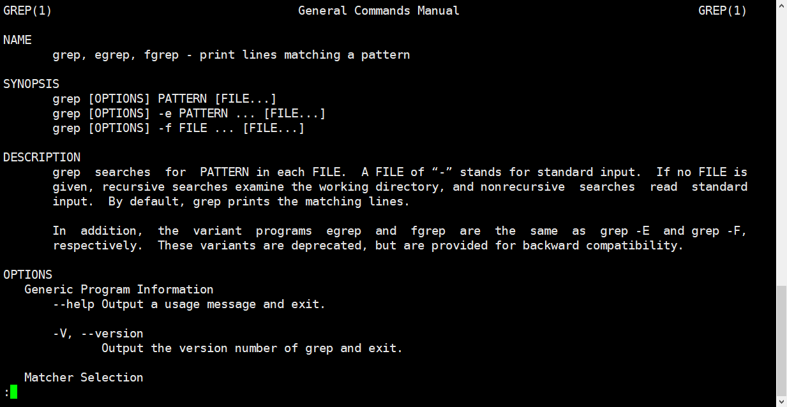
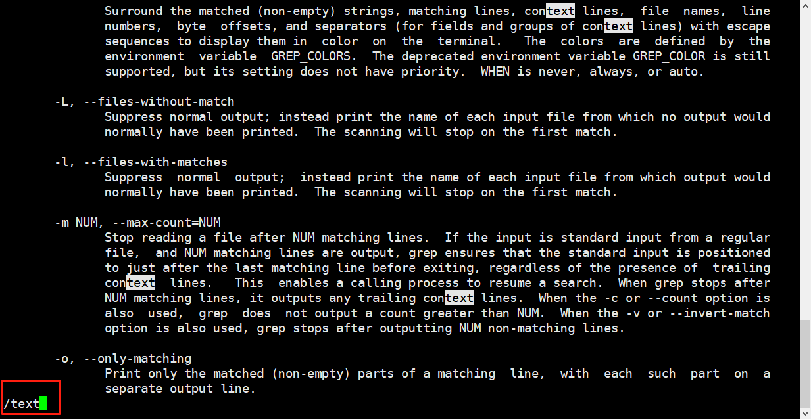

Linux man命令介绍
前言
man是Linux的一个非常强的的命令，它的全称为manual（手册），手册页存放在/usr/share/man
当我们遇到忘记的指令，可以直接通过man指令来获得提示
举个例子，当我们输入man grep|less(less 支持翻页和搜索，支持b向上翻页和d向下翻页)，就会获得以下界面。为了快速检索到我们想要的关键字信息，可以输入**/text**，从而快速的匹配到text，获得对应信息


man文档的内容结构
man 页面分组
不同类型的帮助称为不同的“章节”统称为Linux手册，man 1 man
| Executable programs or shell commands | 用户命令 |
|---|---|
| System calls (functions provided by thekernel) | 系统调用 |
| Library calls(functions within program libraries) | C库调用 |
| Special files (usually found in /dev) | 设备文件及特殊文件 |
| File formats and conventionseg /etc/passwd | 配置文件格式 |
| Games | 游戏 |
| Miscellaneous (including macro packages and conventions), e.g. man(7), groff(7) | 杂项 |
| System administration commands(usually only for root) | 管理类的命令 |
| Kernelroutines INon standardl | Linux 内核API |

man 帮助段落说明
| NAME | 名称及简要说明 |
|---|---|
| SYNOPSIS | 用法格式说明 |
| DESCRIPTION | 详细说明 |
| OPTIONS | 选项说明 |
| EXAMPLES | 示例 |
| FILES | 相关说明 |
| AUTHOR | 作者 |
| COPYRIGHT | 版本信息 |
| REPORTING BUGS | bug信息 |
| SEE ALSO | 其他帮助参考 |
| [] | 可选内容 |
| <> | 必选内容 |
| a|b | 二选一 |
| {} | 分组 |
| … | 同一内容可以出现多次 |
本博客所有文章除特别声明外，均采用 CC BY-SA 4.0 协议 ，转载请注明出处！